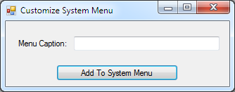

Customize Windows Forms app's System Menu (CSCustomizeSysMenu)
This application demonstrates how to modify a winform application’s system menu. (CSCustomizeSysMenu)
Introduction
This application demonstrates how to modify a winform application’s system menu.
Running the Sample
This is how the application looks like…

Using the Code
In this application I’ve demonstrated how to do the following actions…
- Retrieve system menu: refer btnAddToFormSystemMenu_Click
- Modify system menu: refer btnAddToFormSystemMenu_Click
- Retrieve text item of a system menu item: refer handleSysCustomCommand
How to handle events from system menu items: refer WndProc
The gist of the application lies in the following functions…
C#
Edit|Remove
csharp
private void btnAddToFormSystemMenu_Click(object sender, EventArgs e)
{
IntPtr hMenu = GetSystemMenu(this.Handle, false);
if (hMenu != IntPtr.Zero)
{
Int32 Count = GetMenuItemCount(hMenu);
MENUITEMINFO mnuInfo = new MENUITEMINFO();
mnuInfo.cbSize = MENUITEMINFO.sizeOf;
mnuInfo.fMask = MIIM_STRING | MIIM_ID;
mnuInfo.fState = MFS_ENABLED;
mnuInfo.fType = MFT_STRING;
mnuInfo.wID = BaseCommandId + ++CurrentIndex;
mnuInfo.dwTypeData = txtMenuCaption.Text;
InsertMenuItem(hMenu, (UInt32)Count, true, ref mnuInfo);
DrawMenuBar(hMenu);
}
}
private void btnAddToFormSystemMenu_Click(object sender, EventArgs e) { IntPtr hMenu = GetSystemMenu(this.Handle, false); if (hMenu != IntPtr.Zero) { Int32 Count = GetMenuItemCount(hMenu); MENUITEMINFO mnuInfo = new MENUITEMINFO(); mnuInfo.cbSize = MENUITEMINFO.sizeOf; mnuInfo.fMask = MIIM_STRING | MIIM_ID; mnuInfo.fState = MFS_ENABLED; mnuInfo.fType = MFT_STRING; mnuInfo.wID = BaseCommandId + ++CurrentIndex; mnuInfo.dwTypeData = txtMenuCaption.Text; InsertMenuItem(hMenu, (UInt32)Count, true, ref mnuInfo); DrawMenuBar(hMenu); } }
C#
Edit|Remove
csharp
private void handleSysCustomCommand(UInt32 CmdId)
{
IntPtr hMenu = GetSystemMenu(this.Handle, false);
MENUITEMINFO mnuInfo = new MENUITEMINFO();
mnuInfo.cbSize = MENUITEMINFO.sizeOf;
mnuInfo.fType = MFT_STRING;
mnuInfo.fMask = MIIM_STRING;
// Get size of buffer first, this call will fill out mnuInfo.cch val which is the buffere size
if (!GetMenuItemInfo(hMenu, CmdId, false, ref mnuInfo))
{
ShowLastError();
}
else
{
// Pad up a bit
mnuInfo.cch += 4;
mnuInfo.dwTypeData = new String(' ', (Int32)mnuInfo.cch);
if(!GetMenuItemInfo(hMenu, CmdId, false, ref mnuInfo)) // This time get menu item text
{
ShowLastError();
}
else
{
String Text = String.Format("You clicked on: {0}", mnuInfo.dwTypeData);
MessageBox.Show(Text, "Menu text", MessageBoxButtons.OK, MessageBoxIcon.Information);
}
}
}
// A demo on how to handle the event from the new system menu items...
protected override void WndProc(ref Message Msg)
{
if (Msg.Msg == WM_SYSCOMMAND)
{
if ((UInt32)Msg.WParam.ToInt32() > BaseCommandId)
{
handleSysCustomCommand((UInt32)Msg.WParam.ToInt32());
}
}
base.WndProc(ref Msg);
}
private void handleSysCustomCommand(UInt32 CmdId) { IntPtr hMenu = GetSystemMenu(this.Handle, false); MENUITEMINFO mnuInfo = new MENUITEMINFO(); mnuInfo.cbSize = MENUITEMINFO.sizeOf; mnuInfo.fType = MFT_STRING; mnuInfo.fMask = MIIM_STRING; // Get size of buffer first, this call will fill out mnuInfo.cch val which is the buffere size if (!GetMenuItemInfo(hMenu, CmdId, false, ref mnuInfo)) { ShowLastError(); } else { // Pad up a bit mnuInfo.cch += 4; mnuInfo.dwTypeData = new String(' ', (Int32)mnuInfo.cch); if(!GetMenuItemInfo(hMenu, CmdId, false, ref mnuInfo)) // This time get menu item text { ShowLastError(); } else { String Text = String.Format("You clicked on: {0}", mnuInfo.dwTypeData); MessageBox.Show(Text, "Menu text", MessageBoxButtons.OK, MessageBoxIcon.Information); } } } // A demo on how to handle the event from the new system menu items... protected override void WndProc(ref Message Msg) { if (Msg.Msg == WM_SYSCOMMAND) { if ((UInt32)Msg.WParam.ToInt32() > BaseCommandId) { handleSysCustomCommand((UInt32)Msg.WParam.ToInt32()); } } base.WndProc(ref Msg); }
More Information
GetSystemMenu function
GetMenuItemInfo function
GetMenuItemCount
DrawMenuBar function
GetMenuItemID function
http://msdn.microsoft.com/en-us/library/windows/desktop/ms647979(v=vs.85).aspx
GetMenuInfo function
http://msdn.microsoft.com/en-us/library/windows/desktop/ms647977(v=vs.85).aspx